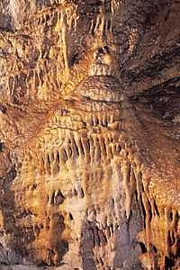
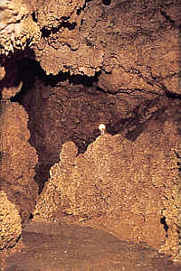

|
|
Pálvölgyi und
Szemlöhegyi Höhlen in Budapest |
| |
Die Höhlen
von Budapest
- Der westliche Stadtteil Buda wurde auf einer
Karstgebirgskette erbaut. Der Untergrund ist hier zerklüftet
und durchlöchert wie der Emmentaler Käse aus der Schweiz.
Bisher
gibt es unter den Budaer Bergen insgesamt etwa 30 erschlossene
Höhlenkilometer.
|
Labyrinth - Sachvertändigern zufolge ein
Weltwunder mit Spuren zurück vor 40
Millionen Jahren. Spätetens seit der Römerzeit werden diverse
Gänge und Räumlichkeiten im Burgberg - lange Zeit vor den
Palastbauten - intensiv genutzt. Sie wurden in den 1930er
Jahren zu einigen, später zu einem Hauptlabyrinth verbunden.
Die Gänge unter dem königlichen Burgpalast dienten für die Obrigkeit und deren Gäste als
Fluchtweg, aber auch für den täglichen Gebrauch, z.B. als
unterirdischer Geheimgang zu den Thermalbädern an der Donau
(heute Rácz- und Rudasbad). Das Labyrinth wurde im Laufe der
Zeit für verschiedene Zwecke genutzt, u.a. für die
Verteidigung bei militärischen Angriffen. Den Türken gelang es
im Jahre 1541 lediglich durch Verrat dieser Geheimgänge, die
Burg zu erobern. Die größeren Räumlichkeiten wurden vor dem
zweiten Weltkrieg zum
Hospital für die Bevölkerung ausgebaut, die in der Umgebung
der Burg wohnte und zuletzt auch als
Lazarett genutzt. Zu den unrühmlichsten Geschichten des
Labyrinths zählt die Eroberung des Hospitals durch die
Sowjetarmee im Januar 1945, als sie mit Flammenwerfern
im Hospital alle - das medizinische Personal und Kranke - ohne
Ausnahme verbrannten. Obwohl diese Tat danach in mehreren
politischen Zeitperioden amtlich veröffentlicht wurde, wird
sie seit der Machtübernahme durch die sozialliberale Koalition
im Jahre 2002 und auch von der aktuellen Orbán Regierung (1998
bis 2002 und seit 2010 erneut) abgestrittenund, wie viele
andere Taten in der ungarischen Geschichte, die seit 1949 in
den Schulbüchern laufend neu geschrieben werden. Während der
roten Ära erbauten sich die Machthaber ihre Atombunker und
weitere militärische Anlagen, davon waren in letzter Zeit
lediglich die Luftabwehranlagen zu sehen - in den rd. 30
Jahren von 1983 bis 2011 - in einer Zeit, als das Labyrinth
für die Öffentlichkeit wie ein Museum offen war. Seit dem 29. Juli 2011 sind die
Besucher im Labyrinth unerwünscht.
|
Die folgenden zwei Budapester Höhlen befinden sich unweit
voneinander. Außer Montag und Dienstag können beide in wenigen
Stunden besichtigt werden.
|
Pálvölgyi Tropfsteinhöhle
- 1025 Budapest, Szépvölgyi út Weg 162
im 2. Stadtbezirk. Geöffnet
täglich außer
montags 10-16 Uhr, Führungen finden 15 Minuten nach jeder vollen
Stunde statt.
Anmeldung
zur 3stündigen
Tour unter Tel.: 351-0655.
Mit ihren 13,7 Kilometern ist die
Pálvölgyi Höhle die zweitgrößte des Landes und größte in
Budapest. Von den 13,7 km sind 500 Meter für die
Öffentlichkeit zugänglich. Entdeckt wurde die Pálvölgyi Höhle
im Juni 1904. Die Tour durch die Pálvölgyi Tropfsteinhöhle bietet den Besuchern Tropfsteingebilde und Kristalle
in außerordentlicher Form. Die Höhenunterschiede sind gering
und erfordern geringe Kraftanstrengung. |
 |
|
Höhle
von Szemlőhegy - befindet sich
ebenfalls im 2. Stadtbezirk
(Pusztaszeri
út Weg 35), unweit von der Tropfsteinhöhle. Hier sind 300 Meter für die
Öffentlichkeit zugänglich. In diesem
Höhlensystem können eigenartige
Aragonitgebilde bewundert werden. Die Führungen finden -
außer Dienstag
- stündlich statt. |
 |
|
|
|
| |
Ungarn-Tourist Team

|
 |
| |
|